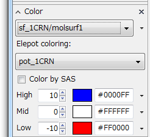
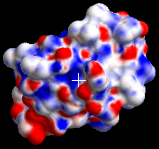
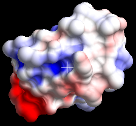

APBS ElePot
Calculating and Displaying Electrostatic Potential Maps Using APBS¶
Using CueMol2 with APBS (http://www.poissonboltzmann.org/apbs), you can calculate electrostatic potential maps with reasonable ease.
Installing Required Software¶
First, please refer to cuemol2/APBS_Install to install the necessary software.
Loading Molecules and Generating Molecular Surfaces¶
Next, load the molecule for which you want to calculate the electrostatic potential.
Additionally, create a molecular surface for display. (See Creating Molecular Surfaces Using MSMS)
APBS Tool Settings¶
Next, execute the menu "Tools" → "APBS elepot calculation..." to display the APBS tool dialog.
{kind=link}
APBS Configuration¶
First, specify the installed APBS executable file in "APBS exe path:".
Press the "Change..." button to bring up a file open dialog, and specify the APBS.exe (or apbs on macOS) file installed according to cuemol2/APBS_Install.
For Windows¶
CueMol2 2.1.0 and later (Windows version only) includes APBS. If you installed CueMol2 in:
C:\Program Files (x86)\CueMol 2.0
then APBS.exe is installed at:
C:\Program Files (x86)\CueMol 2.0\apbs\APBS.exe
This file should be specified by default, but if not, please specify the above file.
For macOS¶
If you installed in /Applications as described in cuemol2/APBS_Install, specify the following for "APBS exe path:":
/Applications/APBS.app/Contents/MacOS/apbs
(If installed in a different location, change the /Applications part accordingly)
Specifying the Calculation Target¶
Next, specify the target molecule for calculation in "Target molecule:". Select the molecule from the dropdown listbox on the right.
Specifying Selection¶
Below Target molecule, there is a "Selection:" checkbox. If you want to perform calculations on a part of the molecule rather than the entire molecule, turn this ON and specify the calculation target.
As with molecular surface generation, it is typical to exclude water molecules and ions from calculations, so specify a selection like "protein". The 1CRN (crambin) used as an example originally contains only protein molecules in the PDB file, so the default is OK.
Specifying the Generated Potential Object Name¶
In "Elepot name:", specify the name of the potential object to be generated. By default, it is "pot_" + target molecule name, but you can change it to something else.
If the name overlaps with other objects, it will become troublesome when using it for surface coloring later, so always assign a unique name.
Specifying Charge Calculation Method¶
In "Charge calculation method", specify the charge assignment method for calculating the electrostatic potential.
PDB2PQR¶
Clicking "Use PDB2PQR" will use PDB2PQR for charge/atomic radius assignment and hydrogen atom addition. (Please install PDB2PQR referring to cuemol2/APBS_Install before use)
- Turn Use PDB2PQR ON in Charge calculation method
-
Specify the installed pdb2pqr.py file (or pdb2pqr_wrap.bat file) in pdb2pqr.py path:
Press the "Change..." button to bring up a file open dialog, select and specify the file from there. -
Additionally, in "Force field:", you can specify the force field set used for charge assignment, but CHARMM should be fine as is.
For Windows¶
When using the simplified pdb2pqr version included in CueMol2.1.0 or later (Windows version) or in the zip file mentioned in cuemol2/APBS_Install, specify the batch file pdb2pqr_wrap.bat for "pdb2pqr.py path:".
- Note
- The simplified pdb2pqr version included in CueMol2.1.0 or later (Windows version) is installed at:
C:\Program Files (x86)\CueMol 2.0\apbs\pdb2pqr_wrap.bat
when CueMol2 is installed in:
C:\Program Files (x86)\CueMol 2.0
This file should be specified by default, but if not, please specify the above file.
For macOS¶
If you installed in /Applications as described in cuemol2/APBS_Install, specify the following for "pdb2pqr.py path:":
/Applications/pdb2pqr-osx-bin-X.X/pdb2pqr
(Note there is no .py, X.X is the version number. If installed in a different location, change the /Applications part accordingly)
Other¶
If you downloaded and installed the latest version from the PDB2PQR site, literally specify pdb2pqr.py for pdb2pqr.py path:
Internal Method¶
Selecting "Use internal method" will use CueMol2's charge assignment feature.
This is simpler as you don't need to install pdb2pqr, but it doesn't handle protein N-terminals or C-terminals correctly, and when there are no hydrogen atoms in the PDB file, it doesn't add them but rather adds charges to atoms that should have hydrogens attached using a rather crude method, so its use is not recommended.
If hydrogen atoms are already present in the PDB file, turning on "Use hydrogen atoms" will avoid the above problem of adding charges together, making it somewhat better.
Other Options¶
Several APBS options can be specified in the Options section below, but usually there's no need to change them. For details, refer to the APBS documentation.
Executing the Calculation¶
After completing the above settings and pressing the OK button, the calculation begins. Especially for large molecules, not only APBS but also PDB2PQR execution takes considerable time. Please wait patiently.
In CueMol2 2.1.0 and later, calculation result logs are displayed in the log window.
When the calculation is complete, an electrostatic potential object is added to the Scene panel.
{kind=link}
In the figure above, a potential object called pot_1CRN has been added. By default, a unitcell renderer is created for the potential object, which shows the range where the electrostatic potential map was calculated with lines as shown in the figure below.
{kind=link}
Once you've confirmed the range is sufficient, it's usually not needed anymore, so hide or delete it.
Coloring the Molecular Surface¶
Next, I'll explain how to display coloring on the molecular surface. First, display the Color panel and select the molsurf renderer to be colored from the dropdown listbox at the top of the panel (in this case sf_1CRN/molsurf1).
Since it defaults to CPKColoring, click the triangle mark to the right of the dropdown listbox and select "Electrostatic potential" from the menu that appears. The following panel will then be displayed. (For general usage of the Color panel, see Documents/GUIのチュートリアル(CueMol2)/Step7)

By default, coloring is done according to the potential at the Solvent Excluded Surface (SES), i.e., the boundary between the solvent molecule sphere and protein atom spheres (i.e., the surface portion in the figure). However, since this is too close to the charged atomic nuclei, the potential tends to be similar to surface charges, resulting in a mottled coloring that makes the distribution difficult to understand at a glance.

There is a checkbox called "Color by SAS". When turned on, the molecular surface is colored according to the potential at the Solvent Accessible Surface (SAS), i.e., the portion corresponding to the center of the solvent molecule sphere (i.e., points 1.4Å away from the surface portion in the figure).

In the figure above, "Color by SAS" is turned on, and the High and Low values (default 10, -10) have been changed to 2 and -2. Incidentally, the units for the High and Low values are kT/e.
About the Calculated Potential Object¶
When you save the scene to a qsc file, the calculated potential object is embedded in binary format within the qsc file and saved together. Therefore, when you restart CueMol and load it next time, it should display the same as when it was saved.